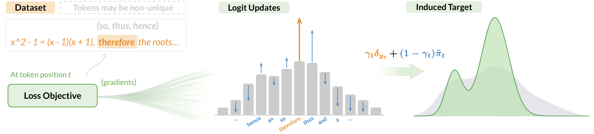
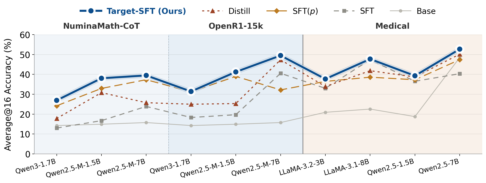

1University of California, Los Angeles (UCLA) · 2Arena
Invert the cross-entropy gradient to find out: $Q_k = p_k - g_k$.

At each prefix $x_t$, the model outputs logits $z$ and a distribution $p = \text{softmax}(z)$. Now suppose there exists some target distribution $Q$ over the vocabulary that we want the model to match. If we train with cross-entropy towards $Q$, then the gradient with respect to a logit $k$ is
This reveals what each loss is actually teaching the model, via the probability updates it defines.
Standard SFT learns one-hot target $\delta_{y_t}$; p-loss interpolates from $p$ to $\delta_{y_t}$.
We illustrate this with two losses: standard SFT with negative log-likelihood, and p-loss, a token-level variant scaled by the model's current probability $p_y$. Applying $Q_k = p_k - g_k$ to each derives the target.
Places all probability mass on the observed token $y_t$.
Target depends on $p_y$: stays close to current $p$ when uncertain, approaches $\delta_{y_t}$ only as $p_y \to 1$.
This visualizes the comparison. It plots the effects of each loss function, on both the observed token $y_t$ (solid), and a non-observed token $k \ne y_t$ (dashed). Hover on legend to highlight corresponding curves.
x-axis = current model probability on the token of interest: $p_y$ for the observed token (solid), $p_k$ for other tokens (dashed).
Constant updates
Gradient pulls toward $y_t$ and suppresses all $k$ with fixed strength, no matter how certain the model already is.
Confidence-scaled updates
Gradient scales with $p_y$: near-zero when uncertain ($p_y \approx 0$), approaches standard SFT strength as $p_y \to 1$.
Relax the one-hot target $\delta_{y_t}$ to account for label uncertainty.
But an observed token may be noisy, non-unique, or misaligned with the model. Instead of forcing a rigid one-hot target, we explicitly model for this uncertainty. We replace $\delta_y$ with a mixture distribution $Q_t$ controlled by two design choices:
| Component | Design Question | Effect |
|---|---|---|
| $\gamma_t \in [0,1]$ | How much should we trust the observed token $y_t$? | Controls imitation strength |
| $\tilde{\pi}_t \in \Delta^{|\mathcal{V}|}$ | Where should the remaining $(1-\gamma_t)$ mass go? | Shapes alternative supervision |
The training objective under $Q_t$ decomposes cleanly:
This view shows that SFT training balances two forces: imitation of the label and matching of a residual distribution. Standard SFT simply sets $\gamma_t = 1$, collapsing the second term entirely.
Seemingly different losses vary only in the choice of $\gamma_t$ and $\tilde\pi_t$.
| Method | Category | $\gamma_t$ | $\tilde\pi_t$ |
|---|---|---|---|
| Standard SFT | One-hot | $1$ | — |
Objective $$\ell_t^\text{SFT} = -\log p_t$$ Motivation Maximize likelihood of every observed token. | |||
| DFT | Label Trust | $p_t$ | $\pi_\theta(\cdot\mid x_t)$ |
Objective $$\ell_t^\text{DFT} = -\text{sg}[p_t]\log p_t$$ Motivation Use probability weighting to connect SFT with an RL-style objective.Paper ↗ | |||
| Beyond-log | Label Trust | $p_t^\alpha$ | $\pi_\theta(\cdot\mid x_t)$ |
Objective $$\ell_t^f = f(p_t), \quad \ell_t^\alpha = \frac{1-p_t^\alpha}{\alpha}$$ Motivation Use probability-dependent objectives to balance learning across model capacities.Paper ↗ | |||
| ProFiT | Label Trust | $m_t = \mathbf{1}\{p_t > \tau\}$ | $\pi_\theta(\cdot\mid x_t)$ |
Objective $$m_t = \mathbf{1}[\text{sg}(p_t) > \tau], \quad \ell_t^\text{ProFiT} = -m_t\log p_t$$ Motivation Use probability to identify and train on core tokens.Paper ↗ | |||
| EAFT | Label Trust | $\tilde{H}_t = H(\pi_{\theta,t}^{(k)})/\log k$ | $\pi_\theta(\cdot\mid x_t)$ |
Objective $$\tilde{H}_t = \text{sg}\!\left[\frac{H(\pi_{\theta,t}^{(k)})}{\log k}\right], \quad \ell_t^\text{EAFT} = -\tilde{H}_t\log p_t$$ Motivation Use entropy to weight uncertain or knowledge-conflicting tokens.Paper ↗ | |||
| iw-SFT | Label Trust | $w(\tau) = q(\tau)/\pi_\text{ref}(\tau)$ | $\pi_\theta(\cdot\mid x_t)$ |
Objective $$w(\tau) = \frac{q(\tau)}{\pi_\text{ref}(\tau)}\;(w\text{ trajectory-level}), \quad \ell_t^\text{iw} = -w(\tau)\log p_t$$ Motivation Use an auxiliary distribution to assign trajectory-level weights.Paper ↗ | |||
| CFT | Label Trust | $c_t = \mathbf{1}\{y_t \text{ critical}\}$ | $\pi_\theta(\cdot\mid x_t)$ |
Objective $$c_t = \mathbf{1}\!\left[\forall\tilde{y}_t \in \mathcal{A}_t,\;\text{Correct}(y_{<t},\tilde{y}_t,y_{>t})=0\right]$$ $$\ell_t^\text{CFT} = -c_t\log p_t$$ Motivation Update only causally critical / irreplaceable tokens.Paper ↗ | |||
| Label Smoothing | Residual Dist. | $1 - \lambda$ | $\text{Unif}(\mathcal{V})$ |
Objective $$\ell_t^\text{LS} = -\!\left[(1-\lambda)\log p_t + \frac{\lambda}{|\mathcal{V}|}\sum_{v\in\mathcal{V}}\log p_{\theta,t}(v)\right]$$ Motivation Regularize overconfident predictions for better calibration.Paper ↗ | |||
| SFT + KL | Residual Dist. | $\frac{1}{1+\lambda}$ | $\pi_\text{ref}(\cdot\mid x_t)$ |
Objective $$\ell_t^\text{KL} = -\log p_t + \lambda\,\text{KL}(\pi_\text{ref}(\cdot\mid x_t)\|\pi_\theta(\cdot\mid x_t))$$ Motivation Constrain updates with a reference model to limit drift.Paper ↗ | |||
| ASFT | Residual Dist. | $\frac{p_t}{p_t+\lambda}$ | $\pi_\text{base}(\cdot\mid x_t)$ |
Objective $$\ell_t^\text{ASFT} = \ell_t^\text{DFT} + \lambda\,\text{KL}(\pi_\text{base}(\cdot\mid x_t)\|\pi_\theta(\cdot\mid x_t))$$ Motivation Constrain updates in DFT to prevent distributional drift.Paper ↗ | |||
| Proximal SFT | Residual Dist. | clipping-dependent | $\pi_\text{old}(\cdot\mid x_t)$ |
Objective $$r_t = \frac{p_t}{\pi_\text{old}(y_t\mid x_t)}, \quad \ell_t^\text{PSFT} = -\min\!\left(r_t,\,\text{clip}(r_t,1-\epsilon,1+\epsilon)\right)$$ Motivation Clip ratio to enforce updates within a trust region.Paper ↗ | |||
| GEM | Residual Dist. | $\gamma_t^y = 1,\;\gamma_t^- = 1$ | $\tilde\pi_t^+ = \pi_\theta(\cdot\mid x_t),\;\tilde\pi_t^- = \pi_\theta^{(\beta)}(\cdot\mid x_t)$ |
Objective $$q_t(v) = \frac{\text{sg}[\pi_{\theta,t}(v)]^{1/\beta}}{\sum_{u\in\mathcal{V}}\text{sg}[\pi_{\theta,t}(u)]^{1/\beta}}$$ $$\ell_t^\text{GEM} = \text{CE}(\delta_{y_t},\pi_{\theta,t}) - \text{CE}(q_t,\pi_{\theta,t})$$ Motivation Control probability transfer from alternatives to the observed token to preserve diversity.Paper ↗ | |||
| Knowledge Distillation | Residual Dist. | $0$ | $\pi_T(\cdot\mid x_t)$ |
Objective $$\ell_t^\text{KD} = -\sum_{v\in\mathcal{V}}\pi_T(v\mid x_t)\log\pi_S(v\mid x_t)$$ Motivation Use the teacher logit distribution as a soft target.Paper ↗ | |||
| Distillation (Hybrid) | Residual Dist. | $1 - \lambda$ | $\pi_T(\cdot\mid x_t)$ |
Objective $$\ell_t^\text{KD-H} = (1-\lambda)[-\log\pi_S(y_t\mid x_t)] + \lambda\,D_\text{KL}(\pi_T(\cdot\mid x_t)\|\pi_S(\cdot\mid x_t))$$ Motivation Combine hard-label imitation with teacher logit distribution for enriched soft supervision.Paper ↗ | |||
| Target-SFT | Both | $p_t$ | $\tilde\pi_t^\text{guided} \propto \pi_\theta(\cdot\mid x_t)^{1-\eta}\,\pi_T(\cdot\mid x_t)^\eta$ |
Objective $$Q_t^\text{TARGET} = p_t\,\delta_{y_t} + (1-p_t)\,\tilde{\pi}_t^\text{guided}$$ $$\ell_t^\text{TARGET} = \text{CE}(\pi_\theta(\cdot\mid x_t),\, Q_t^\text{TARGET})$$ Motivation Adaptively balance label imitation with teacher-guided fallback. Teacher influence scales with model uncertainty $1-p_t$. | |||
Define proxy for $\gamma_t$ and adaptively use teacher guidance in alternatives $\tilde\pi_t$.
Model probability $\pi_\theta(y_t \mid x_t)$ naturally encodes the support for $y_t$ among all plausible continuations, based on statistical evidence from pretraining. We use this as proxy for label reliability:
To preserve model prior while allowing external supervision, a teacher distribution provides reward-style signals to reshape $\pi_\theta(\cdot\mid x_t)$. This yields a teacher-guided distribution with closed form:
Trusted token gets strong supervision, with target approaches standard SFT's one-hot $\delta_{y_t}$; while uncertain token allocates higher weight to teacher-guided alternatives, approaches $\tilde{\pi}_t$. Then train with cross-entropy loss to match $Q_t^\text{TARGET}$.
Target-SFT improves reasoning performance across 10 dataset-model settings on math and medical benchmarks. While the baselines fluctuate, Target-SFT consistently achieves the best Average@16 results in every setting.

@article{xie2026targetsft,
title = {A Unifying Lens on Supervised Fine-Tuning Through Target Distribution Design},
author = {Tong Xie, Yuanhao Ban, Yunqi Hong, Sohyun An, Yihang Chen, Cho-Jui Hsieh},
journal = {arXiv},
year = {2026}
}